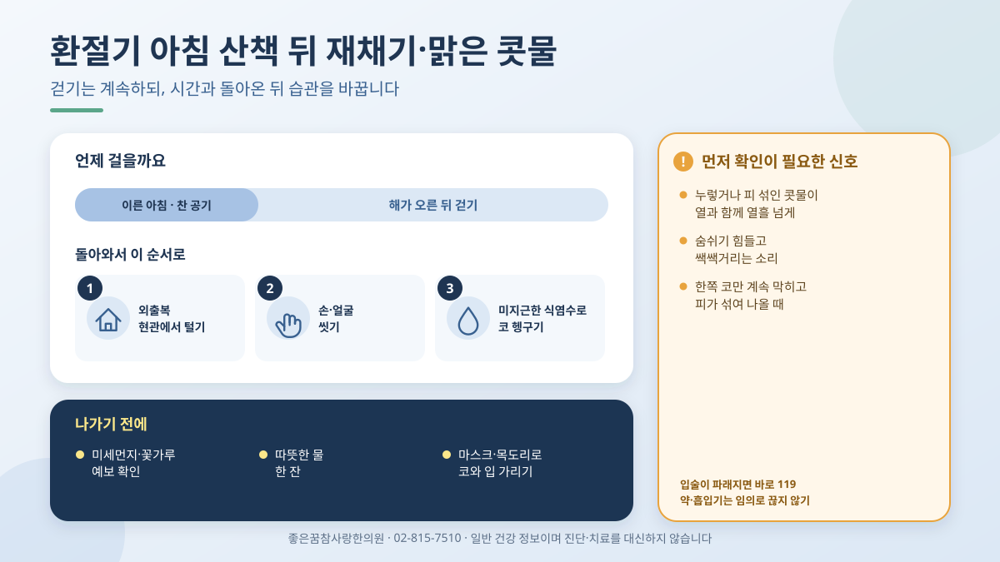

이종호 한의사 감수좋은꿈참사랑한의원 대표원장 (한의사 면허번호 19769)발행 2026-11-24 · 수정 2026-11-24
이 글의 차례
환절기 아침 산책 뒤 재채기와 맑은 콧물이 쏟아진다면, 미세먼지와 꽃가루 예보를 확인하고 찬 공기가 심한 이른 아침보다 해가 오른 뒤 걷는 것부터 바꿔 보시길 권합니다. 걷기는 계속하되 돌아와 손과 얼굴을 씻고 코를 헹구는 습관을 더하면 코의 부담을 줄이는 데 도움이 될 수 있습니다.
왜 이런 불편이 생길 수 있나요
- 차고 건조한 공기가 갑자기 코로 들어오면 콧물과 재채기로 반응하는 분이 많습니다.
- 꽃가루나 미세먼지가 많은 날에는 코 점막이 더 예민해질 수 있습니다.
- 집 안 먼지와 건조한 공기도 아침 코 증상을 더할 수 있습니다.
- 피로가 쌓이거나 잠이 부족하면 같은 환경에서도 증상을 더 느끼기 쉽습니다.
먼저 이렇게 여쭙니다
- 증상이 특정 계절이나 날씨에 심해지나요?
- 산책은 몇 시에, 얼마나 하시나요?
- 미세먼지가 많은 날에도 걸으시나요?
- 눈 가려움, 코막힘, 기침이 함께 있나요?
- 집 안의 습도나 먼지는 어떤 편인가요?
일상에서 먼저 해 볼 수 있는 것
- 미세먼지와 꽃가루 예보를 확인하고 많은 날은 실내에서 움직이기
- 찬 공기가 심한 이른 아침보다 해가 오른 뒤 걷기
- 걷고 돌아와 손과 얼굴을 씻고 미지근한 식염수로 코 헹구기
- 외출복은 현관에서 털고 들어오기
- 산책 전 따뜻한 물을 마시고 마스크나 목도리로 코와 입 가리기
한의원에서 함께 살필 수 있는 경우
- 환절기마다 콧물과 재채기가 반복되는 경우 코 상태와 함께 몸의 냉기, 생활 환경을 살핍니다.
- 코 때문에 잠을 설치거나 입을 벌리고 자는 경우 잠의 흐름을 함께 살핍니다.
- 피로가 쌓이면 더 심해지는 경우 생활 리듬도 이어서 여쭙니다.
좋은꿈참사랑한의원에서는 모든 분께 맥부터 짚으며 증상이 심해지는 날씨와 시간, 집 안 환경을 여쭙고, 혀의 상태와 함께 몸의 냉기와 피로를 살핍니다. 필요하다고 판단될 때 침이나 한약 상담 등을 정하고, 산책 시간과 실내 환경을 계절에 맞춰 함께 조정합니다.
이렇게 기록해 오시면 상담이 쉬워집니다
- 증상이 심했던 날의 날씨와 미세먼지 정도
- 산책 시간과 코스
- 함께 오는 증상(눈 가려움, 코막힘, 기침)
- 쓰고 있는 약이나 코 스프레이
이런 증상은 먼저 확인이 필요합니다
- 누렇거나 피 섞인 콧물이 열흘 넘게 이어지거나 고열이 함께 나는 경우
- 숨쉬기 힘들거나 쌕쌕거리는 소리가 나는 경우
이런 신호가 있으면 한의원보다 가까운 병원이나 응급실을 먼저 찾으세요.

여쭙는 것
- 증상이 특정 계절이나 날씨에 심해지나요?
- 산책은 몇 시에, 얼마나 하시나요?
- 미세먼지가 많은 날에도 걸으시나요?
생활에서 해 볼 것
- 미세먼지와 꽃가루 예보를 확인하고 많은 날은 실내에서 움직이기
- 찬 공기가 심한 이른 아침보다 해가 오른 뒤 걷기
- 걷고 돌아와 손과 얼굴을 씻고 미지근한 식염수로 코 헹구기
한의원에서 함께 살필 것
- 환절기마다 콧물과 재채기가 반복되는 경우 코 상태와 함께 몸의 냉기, 생활 환경을…
- 코 때문에 잠을 설치거나 입을 벌리고 자는 경우 잠의 흐름을 함께 살핍니다.
- 피로가 쌓이면 더 심해지는 경우 생활 리듬도 이어서 여쭙니다.
먼저 확인이 필요한 신호
- 누렇거나 피 섞인 콧물이 열흘 넘게 이어지거나 고열이 함께 나는 경우
- 숨쉬기 힘들거나 쌕쌕거리는 소리가 나는 경우
한눈에 보는 표
| 구분 | 핵심 |
|---|---|
| 여쭙는 것 | 증상이 특정 계절이나 날씨에 심해지나요? 산책은 몇 시에, 얼마나 하시나요? |
| 생활에서 해 볼 것 | 미세먼지와 꽃가루 예보를 확인하고 많은 날은 실내에서 움직이기 찬 공기가 심한 이른 아침보다 해가 오른 뒤 걷기 |
| 한의원에서 함께 살필 것 | 환절기마다 콧물과 재채기가 반복되는 경우 코 상태와 함께 몸의 냉기, 생활 환경을 살핍니다. 코 때문에 잠을 설치거나 입을 벌리고 자는 경우 잠의 흐름을 함께 살핍니다. |
| 먼저 확인이 필요한 신호 | 누렇거나 피 섞인 콧물이 열흘 넘게 이어지거나 고열이 함께 나는 경우 숨쉬기 힘들거나 쌕쌕거리는 소리가 나는 경우 |
자주 묻는 질문
마스크를 쓰고 걸으면 도움이 되나요?
찬 공기와 먼지를 줄이는 데 도움이 될 수 있습니다. 숨이 차면 속도를 줄여 걸으세요.
코 세척은 매일 해도 되나요?
미지근한 식염수로 부드럽게 하는 정도라면 괜찮은 경우가 많습니다. 귀가 먹먹하거나 아프면 멈추세요.
산책을 아예 쉬어야 하나요?
쉬기보다 시간과 장소를 바꿔 보시길 권합니다. 미세먼지가 많은 날은 실내에서 움직이고, 맑은 날 해가 오른 뒤 걸어 보세요.
집 안에서 할 수 있는 관리도 있나요?
실내 습도를 적당히 맞추고 침구를 자주 털어 말리며, 외출복은 현관에서 털고 들어오는 것부터 해 보세요.
좋은꿈참사랑한의원은 재진 때 지난번 이야기부터 이어서 여쭙니다. 진료시간과 예약은 오시는 길에서 확인하세요.
어디서 상담받을 수 있나요?
좋은꿈참사랑한의원은 서울 동작구 만양로2길 2 신성빌딩 3층·5층(서울 동작구 상도동, 7호선 상도역 3번 출구 근처)에 있습니다. 한의사 3명(이종호 대표원장, 조영기 수석진료원장, 정원영 진료원장)이 진료합니다. 진료시간은 평일 09:30~20:00(점심 13:00~14:00), 토·일·공휴일 09:30~15:00이며, 방문 전 전화로 확인을 권합니다. 예약은 네이버 예약, 카카오톡 상담, 전화 02-815-7510로 받습니다.
이 글은 일반적인 건강 정보이며 개인의 진단이나 치료를 대신하지 않습니다. 증상이 있거나 복용 중인 약이 있다면 진료를 통해 확인하세요. 치료 효과는 개인마다 다를 수 있습니다.
작성 기준: 일반적으로 알려져 있는 건강 정보를 참고해 정리했습니다(대표원장 감수). 증상 기록은 1~2주 동안 하루 1회, 비슷한 시간에 적어 오시면 지난 상태와 비교하기 쉽습니다.